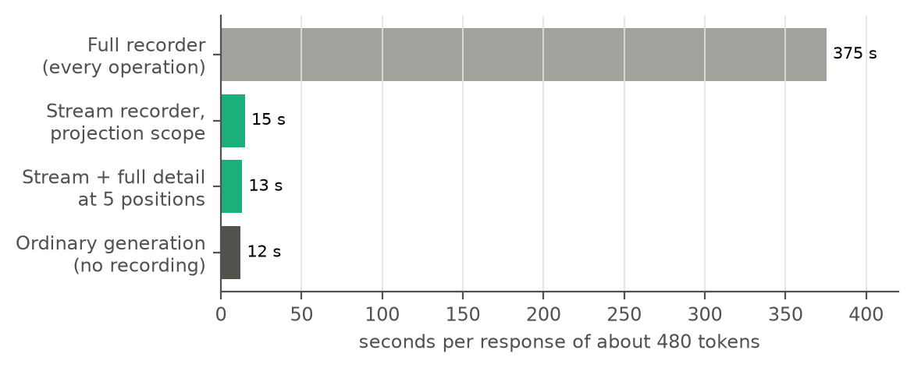
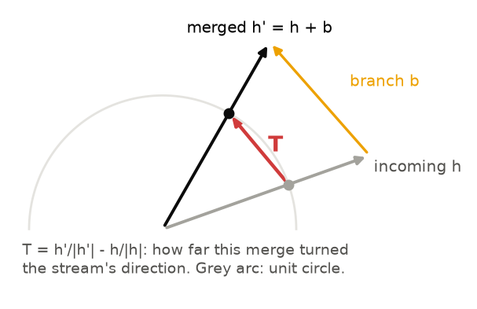
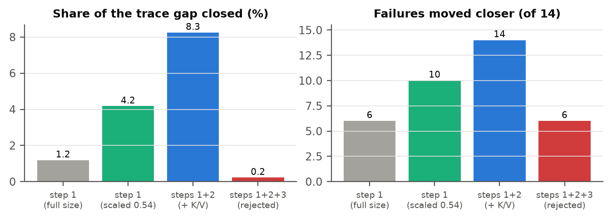
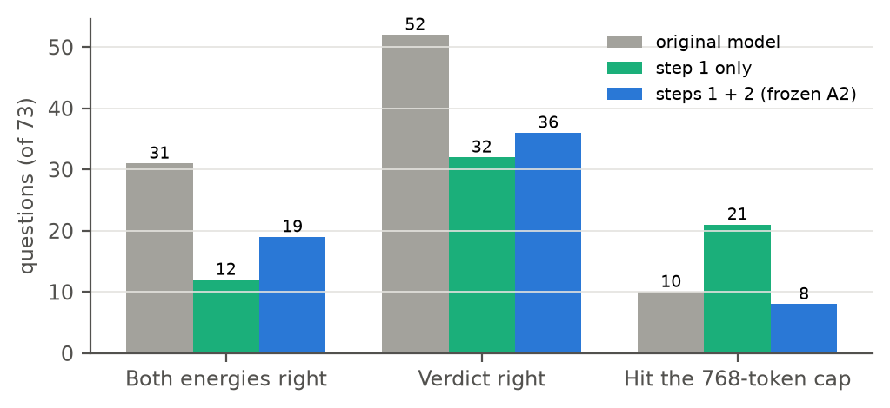
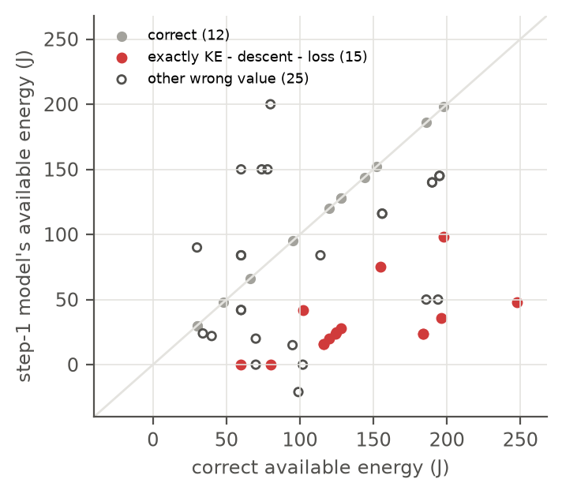

attn_out, pe_in and an unnamed addition we label
pe_out. The first round-two edits changed weights in two of these branches.What this is. A guide for understanding exactly what the experiment does: how the data is captured, what a trace is as numbers, how the target is defined, how the place and size of each weight change are chosen, how each change is checked, and what the first round-two edits actually did. It explains the method; it is not the paper. Every number comes from the run records, and the record behind each one is named in Section 11. Section 10 is a set of questions you could be asked about this work, with short answers.
Your starting point is a theory about weights. A weight does not hold a fact or a skill by itself. Weights mostly act like the faders on a mixing desk: they decide how strongly each part of the incoming signal is passed on and where it goes. A capability is then a pattern of routing, a recognisable way information moves through many weights when the model does a certain kind of work. If that is true, you should be able to see the pattern by recording how the signal moves, compare it between answers where the model gets something right and answers where it gets it wrong, and compute the weight change that moves the wrong routing toward the right one.
The experiment makes that concrete with one model and one mistake. Gemma 4 E2B solves an energy problem: an
object starts moving, goes down a slope, loses some energy on a rough patch, then climbs. It must report the
available energy, the required energy, and whether it makes it. A common mistake is to add the earlier
descent to the final climb: for a 3 m climb after a 1 m descent it computes the required energy for 4 m.
We call this error final_climb_includes_descent.
The work has four parts, and the rest of this guide follows them in order:
Each token the model reads or writes becomes a list of 1,536 numbers, called the residual stream for that token. Think of it as a running summary that every layer reads and then adds to. Gemma 4 E2B has 35 layers. Each layer adds three things to the stream, one after another (Figure 1):
So for each token there are 35 × 3 = 105 merge points. Before each branch, the stream is normalised (RMS norm: divided by its typical size), and after each branch the result is normalised again and scaled by learned weights. That normalisation matters later: what the network mostly reads is the stream's direction, not its raw size.
One detail of this model became important. Layers 15 to 34 do not keep their own caches. They reuse the caches written by layers 13 and 14. Layer 14's keys and values are read by five layers: 14, 19, 24, 29 and 34.
attn_out, pe_in and an unnamed addition we label
pe_out. The first round-two edits changed weights in two of these branches.The model runs in llama.cpp, a C++ inference engine. For every token it builds a graph: a list of about 1,500 small operations (matrix multiplications, normalisations, additions, attention) with each operation's inputs wired to earlier outputs. The engine then runs the graph on the GPU. llama.cpp lets a program register a callback: before any operation runs, the engine asks "do you want to see this one?", and if the answer is yes, it stops after that operation so the program can copy its result off the GPU.
Our recorder is that callback. It never changes a value. To prove it, every recording is checked against an ordinary run of the same question: every generated token must be identical, and so must a fingerprint (a SHA-256 hash) of the full list of 262,144 vocabulary scores at every step. If a single score differed anywhere, the hash would differ.
The full recorder says yes to every operation. For each one it copies every input before the operation and its output after, and links each input to the operation that produced it, including reads from the cache. This gives a complete wiring diagram of the computation: one 479-token answer produced 724,064 recorded operations and 9.3 GB of values. It is also slow, about 375 seconds per answer, because it pauses the GPU around 1,500 times per token.
The selected-position recorder uses the full recorder only at a few chosen tokens and lets everything else run normally. That is how the construction probes work (Section 8).
The stream recorder keeps only what the trace analysis uses, at every token: the incoming stream, each branch's contribution and the result at all 105 merges (247 tensors per token, outputs only, no pauses for inputs). A wider mode also keeps the inputs of every weight matrix plus the attention queries, keys and values, which is enough to solve for a weight change anywhere and to rebuild attention offline. It takes about 15 seconds per answer, close to ordinary generation (Figure 3). Its values were checked bit for bit against the full recorder: 55,081 tensors in one mode and 100,796 in the other on GPU0, and 97,632 on GPU1, with zero differences.

An analogy: the full recorder is a flight data recorder that logs every switch in the cockpit. The stream recorder is a dashcam pointed at the road. For most questions about where the plane went, the dashcam is enough, and when it is not, the flight recorder is still there for the few moments that matter.
Only answers the model wrote itself. An earlier attempt fed the model our corrected answer and recorded that; it was excluded, because a supplied answer changes the history you are trying to observe. Greedy decoding (always taking the top token) makes every answer exactly repeatable. From 283 screened questions, 45 were usable: 18 that made the target error and 27 that solved the problem correctly, each on its assigned GPU. The 40 reserved questions were fixed before any of this and have not been read.
Take one merge for one token. Call the stream arriving there h (1,536 numbers), the branch being added b, and the result h' = h + b. Because the next layer normalises the stream, what matters most is how the merge changed the stream's direction. So we measure the turn:
T = h' / |h'| − h / |h|
Divide each vector by its length so both have length 1, then subtract. T is itself a list of 1,536 numbers: it says in which of the 1,536 directions the stream was pushed by this merge, and by how much.

Do this at all 105 merges of a token, in order, and you get the token's turn field: 105 vectors of 1,536 numbers, 161,280 numbers in all. That ordered list is the trace for one token. It records how each layer bent the running summary, step by step, from the token's arrival to the prediction of the next token. A trace for a whole answer is the same thing for every token, and every number is tied to the exact operation, weight matrix and earlier token that produced it.
This is where the theory becomes measurable. A weight never appears in the trace directly. What appears is the effect of the weights on this particular signal, in this particular context. Two answers that use the same skill should share recognisable stretches of turning even when their numbers and wording differ.
Comparing whole answers token by token does not work once two answers have different text: token 200 in one answer is not "the same moment" as token 200 in another. So the comparison needs an anchor, a point where both answers are doing the same thing. Round two uses the point where the model writes the phrase "above the bottom of the climb" while setting up the required energy, and the five predictions leading into that word. That is where the descent either gets pulled into the climb (failure) or does not (success). For each failing answer, a successful answer is only compared at a position where both have just written the same previous token, so the two signals arrive from the same immediate context.
Of the 18 failures and 27 successes, 14 failures and 23 successes contain that anchor with a valid comparison. These 37 answers, at 5 positions each, are the construction data: 185 token-traces of 161,280 numbers.
For a failing answer f at one of the five positions, collect its matched successful answers s1, …, sk and average their turn fields. The target is the difference:
Df = average of Ts − Tf
"Turn the way the successes turned, at every one of the 105 merges." For a successful answer the target is zero: "keep turning exactly as you already do." Note what this does not say. It does not copy any successful answer's numbers or tokens into the failing one, and it does not mention the final answer at all.
The quantity every step tries to shrink, the objective, is the weighted sum over all 37 answers, 5 positions and 105 merges of the squared distance between where the trace is and where its target says it should be. Two weighting rules keep it fair: every question counts equally within its group, and the failure group and the success group count equally overall. Without them, a long answer or a larger group would dominate.
After an edit, the trace moves. The goal stays fixed at its original definition, so the remaining target for the next step is:
remaining = (original trace + D) − current trace
This prevents a quiet drift in which each step re-defines success relative to the last edit. It also means that if an edit disturbs a successful answer, the next step tries to undo that disturbance.
One design choice to keep in mind for the paper: the zero target for successes is a mild form of protection. Round one's A had nothing like it. It stays in every round-two variant and is stated as part of the round-two objective, with a separate run without it so its effect can be measured (Section 9.4).
There are 276 weight matrices in the model that act on the stream (queries, keys, values, attention outputs, feed-forward gate, up and down, and the per-layer branch). Each one feeds a particular merge. The question for each is: if I could change only this matrix, how much of the target at the merge it feeds could I explain from the inputs it actually sees?
That is answered with a prediction test. For every matrix we take its recorded input vectors from the 185 token-traces and try to predict the target at its merge from them, using ridge regression: a least-squares fit with a penalty that keeps the fit small and stable. The fit is scored the strict way: one whole question is left out at a time, the fit is built from the others, and it is judged on the question it never saw. A matrix whose inputs only "explain" the target by memorising individual questions scores nothing. The strength of the penalty is chosen by the same leave-one-question-out score.
The location chosen is the matrix with the largest held-out share of the target, weighted by how much target sits at its merge. For step 1 that was layer 11's feed-forward down projection: its inputs predicted 11.9% of the target at its merge on questions they had not seen, the best of the 276. An analogy: you have a leak somewhere downstream and 276 valves upstream. For each valve you ask whether its own readings, across many days, would have predicted the leak on a day it did not see. The valve whose readings predict best is where you act first.
Note that this test says where an edit can act. It does not say the capability lives there. Construction 01 learned that the hard way: it chose locations by a different signal (where the attention heads looked) and its directions turned out to be almost unrelated to the target.
Knowing where, the next question is what change to make. The answer comes from running the computation backwards from the target to the weights. The exact way depends on what lies between the matrix and the merge it feeds. Three cases came up.
Between layer 11's down projection and its merge there are only two operations: the output is normalised (RMS norm), multiplied by a learned scale, and added to the stream. Those can be inverted exactly. For each of the 185 token-traces we ask: what output from this matrix would have produced the target turn at this merge? Because the normalisation fixes the output's size, the answer is a new output of the same size but a different direction; it is found by solving a small quadratic equation, and when the full target is out of reach, the largest reachable fraction is found by bisection.
That gives, for each token-trace, an input x the matrix actually saw and the change Δy its output should have had. The weight change is then the matrix ΔW that best maps every x to its Δy, again with ridge regression and the leave-one-question-out choice of penalty. One matrix, fitted to all 37 answers at once, so it must find what the failures have in common rather than fix each one separately.
Layer 14's key and value matrices are harder, because their output is not added to the stream directly. Each token's key and value are written into the cache, and five later layers read them. Changing these two matrices changes the cache entry of every earlier token in the answer, which changes what all five readers see at the five positions. There is no single quadratic to solve here.
Instead we write down the chain of effects and linearise it: how a small change to the key and value matrices changes the normalised keys and values, how the rotation that encodes token position carries that change, how the attention weights shift (the softmax), how the blended values change, how the output projection and its normalisation pass that on, and how the turn at each of the five merges responds. Linearising means: for small changes, effects add up and scale in proportion, so the whole chain becomes one very large matrix that maps a weight change to a trace change. Here it maps 1.57 million weight numbers to 1.42 million trace numbers.
A system that large is not solved directly. It is solved with LSMR, an iterative method that improves a guess step by step and, started from zero, returns the smallest weight change that fits the target as well as possible. It stops once further improvement would be smaller than the precision with which we can reconstruct the model's own arithmetic, because chasing detail below that precision would be fitting noise. The method only needs to apply the chain forwards and backwards; the backward version (the "adjoint") was checked to be the exact mirror of the forward one.
Gemma's cache sharing made this step cleaner than it sounds. Because layers 15 to 34 reuse layer 14's cache and write none of their own, changing layer 14's keys and values changes no other cache. The only effect the linearised chain leaves out is what happens after the merge within the same token. That is why its prediction matched the measured result so closely (Section 8).
The third step tried layer 13's gate, up and down matrices together, linearised through the GeGLU activation the same way. The mathematics checked out, but the full solution was enormous (29% to 72% of each matrix's size), its linear prediction did not survive the real nonlinearity, and even a much smaller version made the measured trace worse. It was rejected on the trace objective itself, before any answers were looked at.
The model stores each weight in BF16, a 16-bit format with about three significant digits. The computed change is added to each weight and the sum is rounded to the nearest BF16 value, exactly as the model would store it. Think of a ruler with coarse marks: a change smaller than half a mark disappears, and a change of one and a half marks becomes one or two. For step 2, the realised change differed from the intended one by 14% to 16%, because the intended changes were about 1% of each weight, close to BF16's resolution of about 0.4%. This is recorded for every step, because as later changes get smaller, rounding becomes a larger share of them.
The rounded matrix is written into a new copy of the model file. The original file is never touched, and every checkpoint is identified by its SHA-256 hash.
To measure what a stored change does to the trace, we run the edited model on each of the 37 answers, but feed it the original answer's tokens up to the anchor, recording the full computation at the five positions. Every earlier token still runs through the edited weights, so the cache it builds is the edited cache; only the text is held fixed. This isolates the edit's effect on the computation from the effect of the model writing different words. It is like re-running the same game footage with one player's skill changed: same plays, different internal decisions.
From those recordings we measure the actual new trace, compare it with the target, and report: how much of the objective closed, how many of the 14 failures moved closer, how aligned each failure's change was with its target, and how far the successes moved.
The computed change is a direction plus a natural size. Because the real model is not linear, the measured effect of the full-size change is used to pick the best multiple of it: the single coefficient that minimises the objective given the measured effect. Step 1 at full size overshot (only 6 of 14 failures closer); at 0.54 of its size, 10 of 14 moved closer and the objective dropped more. The scaled model is stored and measured again, because a prediction is not a measurement.

| Step | Edited matrices | Size of change | Closed | Failures closer |
|---|---|---|---|---|
| 1, full size | layer 11 down projection | 7.2% of the matrix | 1.2% | 6 of 14 |
| 1, scaled 0.54 | same | 0.54 of the above | 4.2% | 10 of 14 |
| 2, on top of 1 | layer 14 key and value | about 1% of each | 8.3% | 14 of 14 |
| 3, on top of 2 | layer 13 gate, up, down | scaled 0.097 | rejected | 6 of 14 |
Two things in this table are genuinely good. The steps compounded: step 2 added about as much again without undoing step 1. And the method's own prediction for step 2 (objective 1.8827) matched the measured value (1.8830) almost exactly, which means the linearised chain in Section 7.2 really described what the model does with that change.
A trace measurement on held-fixed text is not the same as behaviour. So the edited models were also run normally, writing their own answers, on 73 questions: the 47 construction questions and the 28 historical ones (two overlap), with the 40 reserved questions left untouched. The final available energy, required energy and verdict were parsed from each answer by one parser applied identically to the original and edited answers.

The frozen A2 model (steps 1 and 2) repaired five answers, including two clean instances of the target error (required energy 120 → 90 J and 200 → 150 J), and damaged seventeen. Step 1 alone was worse: complete numbers fell from 31 to 12, and answers running into the token limit doubled.
Reading the damaged answers shows one new error, repeated. The edited model computes the energy after the descent as "initial kinetic energy minus the descent", where it used to add it. A typical line: "KE after descent = 90 J − 50 J = 40 J". Its available energy becomes KE − descent − loss, with no randomness about it (Figure 6).

This is not noise. It is a coherent procedure, used consistently on questions the edit was never fitted to, and the original model already used it occasionally: two GPU1 baselines made exactly this error and were set aside as a different error type. The edit did not teach anything new. It shifted the model from one procedure it knew to another. It weakened the descent's positive role everywhere, which removes the descent from the climb, and also removes it from the available energy where it belongs.
The five measured positions sit at "climb", while the model is setting up the required energy. By that point the answer already contains the available-energy line. In the conditional probe, that earlier text is the original text, where the descent is still added correctly. So the objective never saw the passage that got damaged: it measured the right thing in the wrong place. This is not a code error. Every derivative, solve and measurement was correct for the objective it was given. The objective only covered the positions it was pointed at, and an edit to stored weights acts everywhere those weights are used.
The general lesson for the method: a trace objective measured on held-fixed text can improve while behaviour gets worse, if the positions it covers do not include every passage the edited weights influence. Ordinary generation has to be part of every evaluation.
Round one built each edit from a single pair of answers and showed the same pattern at small scale: edit A fixed its target and a second problem but broke a third (the 4 kg block). B protected the damaged contexts and lost the repairs. C protected the damaged contexts while preserving A's repairs and kept both. D did the same with a change shaped to ignore ordinary text, with 85.5% less effect on it than A. None improved new questions.
Round two keeps the same ladder so the comparison stays clean, each rung adding one thing:
The interesting question for B2 is whether protecting the descent passages also removes the climb fix, as round one's B did, because both may run through the same weights. If B2 keeps the repairs and removes the damage, that is the first deliberate, controlled capability edit. If it trades one for the other, C2 is where it gets resolved.
In two minutes, what did you build? A way to compute a persistent weight change for a reasoning error from the model's own successful and failing answers, without training. I record how each token's internal signal turns at every one of the model's 105 merge points, define the gap between failing and successful turns at matched positions, find the weight matrices whose inputs can predict that gap on held-out questions, and solve for the smallest change that closes it. Then I store the change in the model's native format and measure both the trace and the answers.
How do you know the recorder does not change the model? Every recording must reproduce every token and a SHA-256 hash of all 262,144 vocabulary scores at every step of an ordinary run. The fast recorder was also compared bit for bit with the complete one: over 250,000 tensors, zero differences.
Why measure direction instead of the raw vectors? The model normalises the stream before every branch, so the next layer mostly sees direction. Size still matters through the scale weights, and it is recorded beside every turn, but the turn is what the next computation responds to.
Why ridge regression, and why leave out whole questions? There are many more numbers in a weight matrix than there are examples, so an unpenalised fit can match the examples perfectly and mean nothing. The penalty keeps the change small and stable; leaving out whole questions ensures the fit generalises across questions rather than across tokens of the same answer, which are not independent.
Why LSMR for the cache step? The problem had 1.57 million unknowns and 1.42 million equations, too large to solve directly. LSMR only needs to run the effect chain forwards and backwards, and from a zero start it returns the smallest change that fits, which is the safest change consistent with the data.
Why not just use gradient descent on the objective? We could, and that would be a reasonable comparison. The point of the method is that each step is solved and explained: which matrix, why there, what share of the target it can carry, and what it is predicted to do. Gradient descent spreads a change across every weight at once and explains none of it.
The edit made answers worse. Doesn't that kill the idea? It shows two things. The method does change how the model computes, coherently and on questions it was never fitted to: one stored change switched the model to a different procedure across dozens of problems. And the objective only protects what it covers. The failure came from where the objective was pointed, not from the solving, and it is diagnosable down to the exact arithmetic. B2 and C2 test whether the same tools can steer it where we want.
Does a capability live in layer 11? No claim of that kind is made. The location test says where a change can act on the observed gap, not where a skill is stored. The descent-sign result suggests the procedure is distributed: one change at layer 11 altered behaviour in passages it was never aimed at.
How is this different from steering vectors or ROME? Steering adds a fixed direction to the stream while the model runs; it is not stored and acts the same everywhere. ROME and MEMIT edit stored facts with a calculated change. This method edits a reasoning procedure, derives the change from the connected trace of many answers rather than from one fact, and measures the change's effect on the whole computation before looking at answers.
What limits it? The objective covers only the positions it is pointed at; BF16 rounding becomes a larger share of each change as changes get smaller; it needs examples of the model succeeding; and it has been shown on one small model and one error type so far.
Paths are under runs/legs/gemma4-e2b/signal-trace-A-2026-11-07/ unless stated.
stream-qualification-2026-11-08/ (residual, projection, hybrid and GPU1
qualification files, timing.jsonl); full-recorder figures from
cohort-original/expanded-043-h3/audit.json.research/experiments/signal-trace-repair/A.md.trace-construction-02/input-support/index.json.trace-construction-02/step-*/direction.json,
inverse-result.json, native-effect.json and absolute-comparison/index.json; step
3's rejection in research/experiments/signal-trace-repair/A-CONSTRUCTION-02.md.trace-construction-02/step-01-scaled/exploratory-natural-comparison.json and
trace-construction-02/step-02/exploratory-natural-comparison.json, produced by
code/signal-trace/pipeline/evaluation/compare_natural_answers.py.reports/paper-a-d/.code/signal-trace/README.md.